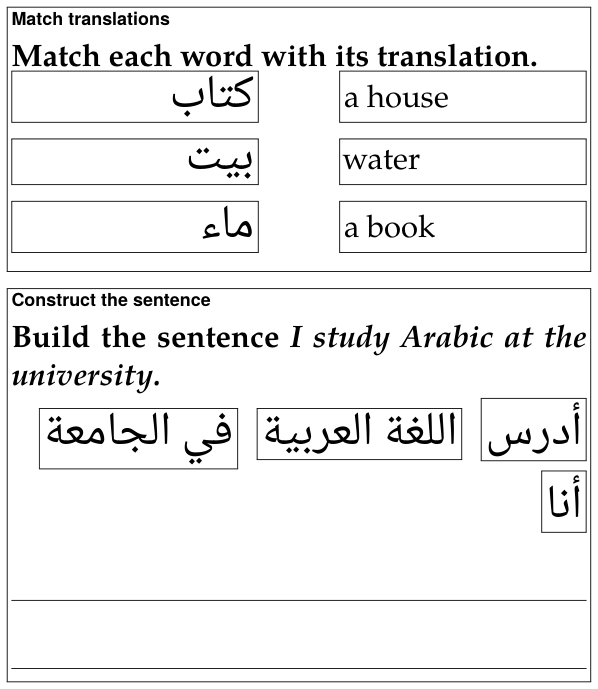

Exercises on paper
A studio document’s PDF prints its exercises unsolved, as a worksheet: no blank is filled, no answer ticked, no statement marked true or false, and the explanations are left out, as are the answer’s picture and recording. A flashcard is the exception, since it is there to study from: it prints both its sides, as a card to cut out and fold (Flashcards).
1. Making the PDF#
On a document’s reading view, Build PDF makes the PDF, View PDF shows it in place of the page, and Download ▾ → PDF saves it. Beside Build PDF, PDF options ▾ says how the next build prints the document — options of the build, not of the Markdown, so one worksheet prints both ways:
| Option | Choices | For |
|---|---|---|
| Print size | Normal · 11 pt, Large · 14 pt, Extra large · 17 pt, Maximum · 20 pt | readers with low vision: the exercises are set a step larger still, with more room to write |
| Colour | Black and white — no colour, no grey (pictures keep their colours) | photocopies: tints and grey text come out as smudges on a copier |
The choice is kept for that document, in that browser. The build badge, in the bar under the page’s buttons, says what the PDF was built with — PDF ✓ 3 pages · scale 1.52 · 17 pt · B&W — and when the options have been changed since, a second badge, built with other options — rebuild, says the PDF on the server is not the one the menu now describes. It is not a fault: press Build PDF again.
2. Every exercise#
Each exercise is a framed box with its label at the top — the type’s name on paper: Fill the blanks, Match definitions, True / False, Yes / No and so on — then the prompt, bold except its {no-bold} passages (a right-to-left line of it set flush right), then the question’s picture, then the question’s recording as a small card: ♪, audio, the file’s name and the stretch its clip plays. Then the exercise itself:
| Type | On paper |
|---|---|
fill-blanks | the sentence, a line for each blank (a right-to-left sentence flush right), then Blocks: and every row’s word, answers and distractors, in the order written |
order-sentences | the sentences as a list, moved round by one place (the second first, the first last) |
construct-sentence | the chunks in a row, each framed, moved round by one place and flowing the way the answer is read; under them, lines to write the sentence on |
match-translations, match-opposites, match-definitions | every entry in a frame, two equal columns with a gap for the line the student draws, the right column moved round by one row |
yes-no, true-false | each statement in a column of its own, the marks Yes / No or True / False aligned in a column at the right |
single-choice, incorrect-part, choose-all, odd-one-out | the answers as a list, a □ before each, in the order written |
flashcard | a card to cut out and fold: a frame with round corners, the front in its left half and the back in its right, each as the page draws it, and a dashed line between them to fold on (Flashcards) |
| an exercise that needs attention | Exercise needs attention in the Markdown source. in red |
An exercise that fits the page goes to the next one whole when it does not fit what is left of this one. One taller than a page — ten pictures to match, each in its frame, or at 20 pt a reading passage and its questions — starts a page and goes on over as many as it needs, with a frame on each, instead of being cut off at the foot of one: at every print size. Straight after a heading, an exercise that a page could not hold together with its heading starts right under it instead, so a heading is never left alone at the foot of a page, nor pushed with its exercise off the next. A flashcard alone is never split, since two pieces of a card could not be folded into one: a card taller than a page is printed smaller, whole, on one page — under its heading, when it follows one.
Each “moved round by one place” is the same on every build, so every copy of a worksheet is alike — and none of it depends on the page’s shuffling, which paper cannot do. Where the order is as written, the order is yours: put the answers of a fill-in’s rows, or the right answer of a choice, where they do not give themselves away.
3. The layouts made for a pen#
Three layouts are made to be written on, and each page of this section shows its own: matching (framed entries), construct the sentence (writing lines) and true / false (aligned marks). What they share:
- Nothing crosses a frame or runs under the marks, whatever the print size. A word too long for its frame or its column is hyphenated there, even when it is the first word; a line may end after a slash (
socioeconomic/political); and what cannot break at all, such as a long number, is set smaller until it fits. - Right-to-left entries are set flush right, and so are their continuation lines, in their own order; anything else is flush left.
- A construct-the-sentence exercise gets as many writing lines as one and a half times its sentence fills — and never fewer than one. TeX measures the sentence as it sets it, chunk by chunk in its own fonts, so the count is right at 11 pt and at 20, in Persian and in Japanese.
4. Large print#
The three larger sizes set the whole document larger, not only its exercises: the headings, the target script and every space grow with the text, the lemma headings by the same ratio, and the margins give a little to keep the lines long enough to read. The exercises are set a step larger still than the text round them — they are what the reader holds closest, and writes on — and their blanks, frames and writing lines grow heavier, the writing lines further apart.
At 20 pt a reading passage and its questions can be taller than a page, and goes on over pages as any exercise taller than a page does (above). A table wider than the line is scaled down to the line, and a vertical (tategaki) column is never longer than the page.
Large print needs a TeX package, extsizes. It is one of the TeX packages the installer adds when it is asked to set up PDF building on a TeX Live that lacks them; a TeX without it stops a large-print build with a message that names the package, and the Normal size builds without it.
The round corners of a flashcard’s frame are drawn by TikZ (the TeX package pgf), which the installer adds as well. A TeX without it builds the PDF all the same, and draws the card’s frame square.
5. Black and white#
For the photocopier: no colour and no grey anywhere, except in the pictures, which keep their colours. Every ink — headings, frames, rules, links, coloured words, {#8E2B34} marks, a coloured lemma — prints black; every tint prints white, and a tinted panel (an exercise’s box, a > box, a tinted target block, a recording’s card) keeps a thin black frame instead, so it is still set off from the page. The red line of an exercise that needs attention prints in bold black.

For the command line
Everything above is done from the document’s page. The same build is also a command, markdown/exlex/exlex.py build, which takes the same two options — --size with 11, 14, 17 or 20, and --mono for black and white — and writes the same .tex:
python3 markdown/exlex/exlex.py build lesson.md -o lesson-pdf --size 17 --mono